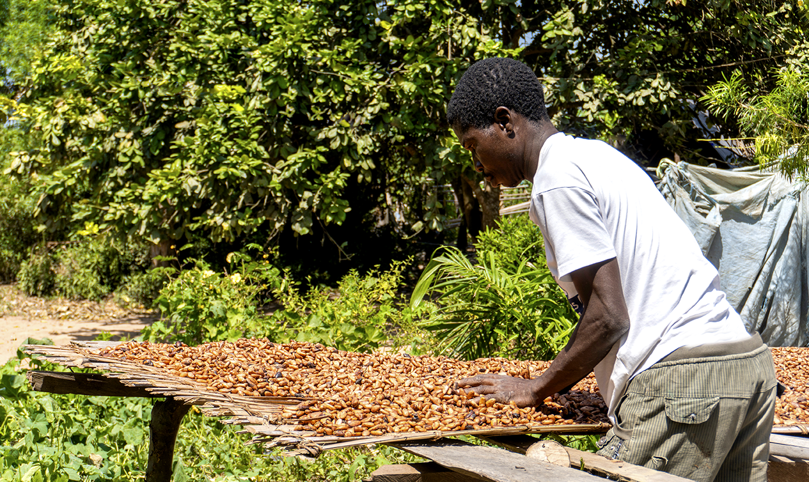

L’exportation bien plus qu’un débouché commercial, vecteur de reconnaissance et de compétitivité.
En 2020, ECAKOOG s’est affirmée comme exportateur de cacao, franchissant une étape décisive dans son développement. Ce choix stratégique illustre notre volonté de ne pas seulement produire, mais de valoriser directement le travail de nos plus de 10 000 producteurs. En nous engageant sur les marchés internationaux, nous avons transformé notre savoir-faire en une véritable valeur ajoutée, en garantissant la qualité, la traçabilité et la durabilité de chaque fève exportée.
L’exportation représente pour nous bien plus qu’un débouché commercial : c’est un levier de reconnaissance et de compétitivité. Elle nous permet de faire rayonner le cacao ivoirien, de renforcer la crédibilité de notre coopérative et d’offrir à nos partenaires une filière responsable et inclusive. Avec notre cacao fine saveur, nous visons les marchés de niche afin de permettre au monde de découvrir les saveurs uniques de notre terroir, symbole d’excellence et d’innovation.
Nos Atouts
- Exportateur depuis 2020
- Produits certifiés et biologiques
- Maîtrise de la fermentation et du séchage
- Création de valeur ajoutée locale
- Engagement social et environnemental
Notre Impact
Cette approche apporte une réelle valeur ajoutée à la filière du cacao en Côte d'Ivoire, en abordant les problèmes tels que la pauvreté des agriculteurs, le déséquilibre dans la répartition des bénéfices, la déforestation, le travail des enfants, et la discrimination envers les femmes.